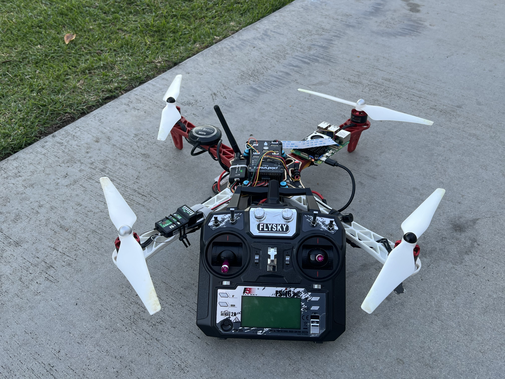
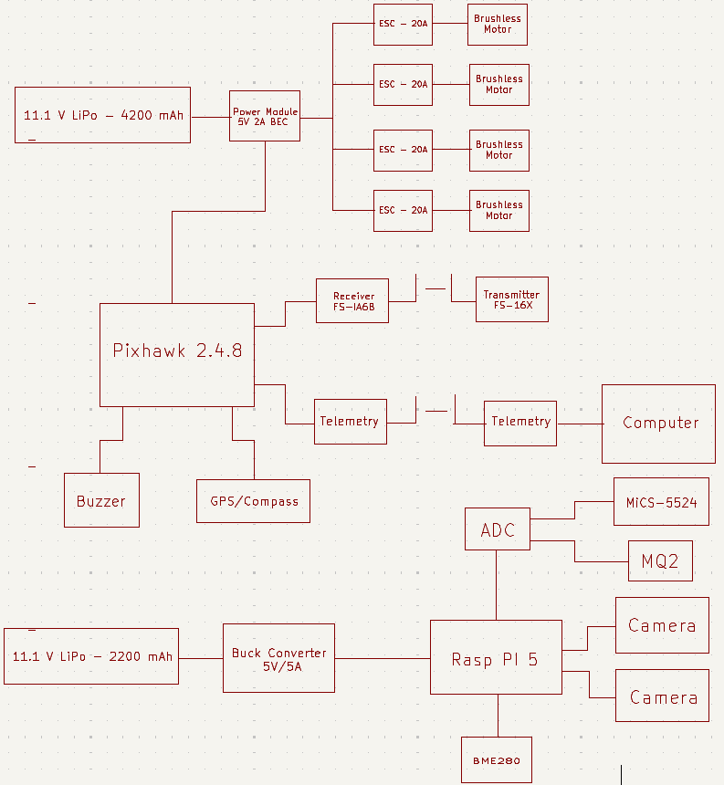
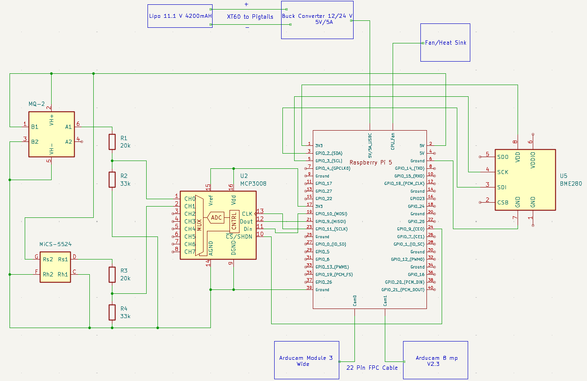
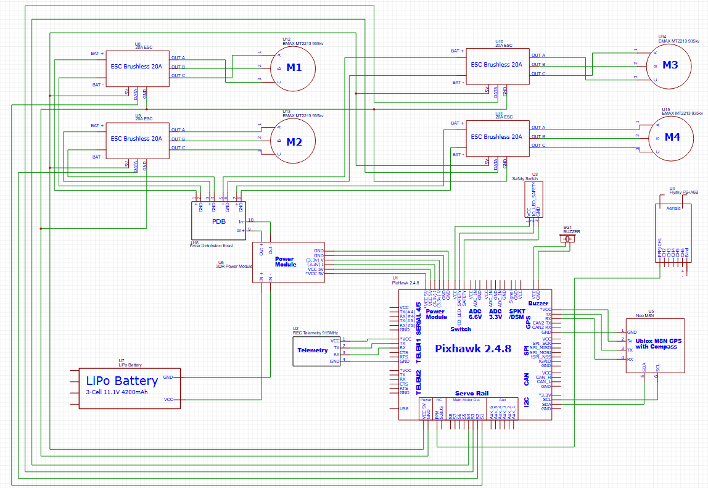

Cal Poly Pomona Senior Design | Team: D. Rushakoff, N. Trad, C. Bell
Raspberry Pi 5 | Mixed-Signal PCB
QUICK NAVIGATION

As part of the Aether UAV capstone team, I led the hardware architecture and software integration for a custom environmental sensing payload. The primary objective was to safely interface a suite of 5V analog gas sensors (MQ-2, MiCS-5524) and a 3.3V I2C digital sensor (BME280) with a Raspberry Pi 5 flight computer to capture real-time telemetry during flight.
The overarching architecture was designed to isolate the flight-critical control systems from the experimental telemetry payload. Below is the high-level block diagram detailing power distribution, data routing, and subsystem communication.

To safely step down the 5V analog signals to the 3.3V logic level required by the MCP3008 ADC and the Pi's GPIO, I designed custom voltage dividers utilizing 1.8kΩ and 3.3kΩ resistor chains. I fabricated a 2x2" mixed-signal perfboard layout utilizing a 16-pin DIP socket for the ADC, tying AGND and DGND to a common ground rail (Pi Pin 6), and installing 0.1µF bypass capacitors across the power rails to filter in-flight motor noise. I verified signal integrity and diagnosed initial I2C bus noise across the perfboard using a digital oscilloscope and multimeter, ensuring stable telemetry drops before flight.


I migrated the initial Arduino C++ testing code into Python for the Raspberry Pi 5. Below are the individual data acquisition scripts used to poll the environmental sensors during flight operations.
import time
import board
from adafruit_bme280 import basic as adafruit_bme280
# --- Configuration ---
# Sea level pressure standard
SEALEVELPRESSURE_HPA = 1013.25
def setup():
print("BME280 test")
# Create library object using our Bus I2C port
i2c = board.I2C() # uses board.SCL and board.SDA
try:
# Address is usually 0x77. If that fails, try 0x76.
bme = adafruit_bme280.Adafruit_BME280_I2C(i2c, address=0x77)
except ValueError:
try:
# Fallback to 0x76 if 0x77 fails
bme = adafruit_bme280.Adafruit_BME280_I2C(i2c, address=0x76)
except ValueError:
print("Could not find a valid BME280 sensor, check wiring!")
return None
# Set the sea level pressure for altitude calculation
bme.sea_level_pressure = SEALEVELPRESSURE_HPA
print("-- Default Test --")
return bme
def print_values(bme):
# Temperature (Arduino uses readTemperature())
print(f"Temperature = {bme.temperature:.2f} *C")
# Pressure
# Note: Arduino library returns Pa, so it divides by 100.
# Python library returns hPa directly, so NO division is needed.
print(f"Pressure = {bme.pressure:.2f} hPa")
# Altitude
# Calculated based on the sea_level_pressure we set earlier
print(f"Approx. Altitude = {bme.altitude:.2f} m")
# Humidity
print(f"Humidity = {bme.relative_humidity:.2f} %")
print() # Empty line
def loop(bme):
# Standard Arduino-like loop
while True:
print_values(bme)
time.sleep(1) # Delay 1000ms
# --- Main Execution ---
if __name__ == "__main__":
sensor = setup()
if sensor is not None:
try:
loop(sensor)
except KeyboardInterrupt:
print("\nExiting...")
import time
import math
from gpiozero import DigitalOutputDevice, MCP3008
# --- Constants & Configuration ---
CALIBRATION_TIME = 2 # Minutes
ADC_CHANNEL = 0 # Equivalent to A0 (Channel 0 on MCP3008)
POWER_PIN = 2 # GPIO 2 (Physical pin 3)
# Gas Type Constants (IDs)
CO = 0
CH4 = 1
C2H5OH = 2
H2 = 3
NH3 = 4
NO2 = 5
class DFRobot_MICS_ADC:
def __init__(self, adc_channel, power_pin):
# Initialize ADC (assumes MCP3008 is connected via SPI)
self.adc = MCP3008(channel=adc_channel)
# Initialize Power Pin
self.power = DigitalOutputDevice(power_pin)
self.is_sleeping = True
self.__start_time = 0
# NOTE: These are approximate default sensitivity values.
# In the C++ library, these are hardcoded lookup tables.
# We use a base resistance (R0) approximation here.
self.r0 = -1
def begin(self):
# On Pi, if the object initialized without error, we assume it's connected
return True
def get_power_state(self):
return 0 if self.is_sleeping else 1
def wake_up_mode(self):
self.power.on()
self.is_sleeping = False
# Reset internal timer for warm up reference
self.__start_time = time.time()
def sleep_mode(self):
self.power.off()
self.is_sleeping = True
def warm_up_time(self, minutes):
# Returns False if still warming up, True if done
elapsed = (time.time() - self.__start_time)
required_seconds = minutes * 60
return elapsed >= required_seconds
def get_gas_data(self, gas_type):
"""
Reads voltage, calculates resistance (Rs), and estimates PPM.
Note: Real accuracy requires calibrating R0 in clean air first.
"""
# Read voltage (0.0 to 1.0 represents 0V to 3.3V)
voltage = self.adc.value * 3.3
# Avoid division by zero
if voltage <= 0: return 0.0
# Calculate Sensor Resistance (Rs) assuming a 10k divider resistor
# Standard circuit: Vout = Vcc * (R_load / (Rs + R_load))
# Solved for Rs: Rs = (Vcc * R_load / Vout) - R_load
r_load = 10000 # 10k Ohm
rs = (3.3 * r_load / voltage) - r_load
if rs < 0: rs = 0
# Placeholder ratios (Rs/R0) -> PPM conversion
# The C++ library uses specific exponential curves for each gas.
# Simplified Approximation: PPM = A * (Rs/R0)^B
# Without calibration, we return a raw scaled value to show it works.
return rs / 100.0 # Returning Raw Resistance scaled down for display
# --- Main Program Setup ---
# Initialize the sensor object
mics = DFRobot_MICS_ADC(ADC_CHANNEL, POWER_PIN)
def setup():
print("Initializing...")
# Attempt to initialize
while not mics.begin():
print("No devices found! Please check the connections.")
time.sleep(1)
print("Device connected successfully!")
# Check power state
mode = mics.get_power_state()
if mode == 0: # 0 is sleep/off
mics.wake_up_mode()
print("Sensor woken up successfully!")
else:
print("Sensor is already in wake-up mode.")
# Wait for warm-up
# Note: warm_up_time returns True when FINISHED, False when busy
print(f"Warming up for {CALIBRATION_TIME} minutes...")
while not mics.warm_up_time(CALIBRATION_TIME):
# We print a dot or message to keep the user updated without spamming
print("Please wait until the warm-up time is over!", end='\r')
time.sleep(1)
print("\nSensor is ready for use.")
def loop():
while True:
# Read gas data
co_concentration = mics.get_gas_data(CO)
ch4_concentration = mics.get_gas_data(CH4)
c2h5oh_concentration = mics.get_gas_data(C2H5OH)
h2_concentration = mics.get_gas_data(H2)
nh3_concentration = mics.get_gas_data(NH3)
no2_concentration = mics.get_gas_data(NO2)
# Print data
print(f"CO (Carbon Monoxide): {co_concentration:.1f} PPM")
print(f"CH4 (Methane): {ch4_concentration:.1f} PPM")
print(f"C2H5OH (Ethanol): {c2h5oh_concentration:.1f} PPM")
print(f"H2 (Hydrogen): {h2_concentration:.1f} PPM")
print(f"NH3 (Ammonia): {nh3_concentration:.1f} PPM")
print(f"NO2 (Nitrogen Dioxide): {no2_concentration:.1f} PPM")
print()
time.sleep(1)
# mics.sleep_mode() # Uncomment to sleep after reading
# --- Execution ---
if __name__ == "__main__":
try:
setup()
loop()
except KeyboardInterrupt:
print("\nExiting...")
mics.sleep_mode()
import time
import math
from gpiozero import MCP3008
from RPLCD.gpio import CharLCD
from RPi import GPIO
# --- Hardware Configuration ---
# ADC Configuration (MCP3008)
# Connect Sensor Analog Pin -> MCP3008 Channel 0
adc = MCP3008(channel=0)
# LCD Configuration (Assumes 16x2 Display)
# You must wire these GPIO pins to your LCD
lcd = CharLCD(cols=16, rows=2, pin_rs=26, pin_e=19, pins_data=[13, 6, 5, 11], numbering_mode=GPIO.BCM)
# --- Sensor Constants ---
RL_VALUE = 5.0 # Load resistance in kilo ohms
RO_CLEAN_AIR_FACTOR = 9.83 # RO_CLEAR_AIR_FACTOR=(Sensor resistance in clean air)/RO
# --- Software Constants ---
CALIBARAION_SAMPLE_TIMES = 50
CALIBRATION_SAMPLE_INTERVAL = 0.5 # Seconds (500ms in Arduino)
READ_SAMPLE_INTERVAL = 0.05 # Seconds (50ms in Arduino)
READ_SAMPLE_TIMES = 5
# --- Gas Constants ---
GAS_LPG = 0
GAS_CO = 1
GAS_SMOKE = 2
# --- Curves ---
# Format: {x, y, slope}
LPGCurve = [2.3, 0.21, -0.47]
COCurve = [2.3, 0.72, -0.34]
SmokeCurve = [2.3, 0.53, -0.44]
# Global Ro variable (init to 10k)
Ro = 10.0
# --- Helper Functions ---
def MQResistanceCalculation(raw_adc):
"""
Input: raw_adc (0.0 to 1.0 from gpiozero, which we scale to 0-1023 equivalent)
Output: Sensor resistance
"""
# gpiozero returns 0.0 to 1.0. We map this to 0-1023.
raw_val = raw_adc * 1023.0
# Prevent division by zero if sensor is disconnected (reading 0)
if raw_val <= 0:
return 0.0
if raw_val >= 1023:
return 0.0
return float(RL_VALUE * (1023.0 - raw_val) / raw_val)
def MQCalibration():
val = 0.0
for i in range(CALIBARAION_SAMPLE_TIMES):
# Read from ADC
val += MQResistanceCalculation(adc.value)
time.sleep(CALIBRATION_SAMPLE_INTERVAL)
val = val / CALIBARAION_SAMPLE_TIMES
val = val / RO_CLEAN_AIR_FACTOR
return val
def MQRead():
rs = 0.0
for i in range(READ_SAMPLE_TIMES):
rs += MQResistanceCalculation(adc.value)
time.sleep(READ_SAMPLE_INTERVAL)
rs = rs / READ_SAMPLE_TIMES
return rs
def MQGetPercentage(rs_ro_ratio, pcurve):
"""
Uses the curve data to calculate PPM.
Formula: 10 ^ ( ((log(rs_ro_ratio) - pcurve[1]) / pcurve[2]) + pcurve[0] )
"""
# Check for math domain errors (log of 0 or negative)
if rs_ro_ratio <= 0:
return 0.0
log_value = math.log(rs_ro_ratio)
exponent = ((log_value - pcurve[1]) / pcurve[2]) + pcurve[0]
return math.pow(10, exponent)
def MQGetGasPercentage(rs_ro_ratio, gas_id):
if gas_id == GAS_LPG:
return MQGetPercentage(rs_ro_ratio, LPGCurve)
elif gas_id == GAS_CO:
return MQGetPercentage(rs_ro_ratio, COCurve)
elif gas_id == GAS_SMOKE:
return MQGetPercentage(rs_ro_ratio, SmokeCurve)
return 0
# --- Main Logic ---
def setup():
global Ro
print("Calibrating...")
lcd.clear()
lcd.write_string("Calibrating...")
Ro = MQCalibration()
print("Calibration is done...")
print(f"Ro={Ro:.2f} kohm")
lcd.clear()
lcd.write_string("Done! Ro=")
lcd.cursor_pos = (1, 0)
lcd.write_string(f"{Ro:.2f} kohm")
time.sleep(2)
def loop():
while True:
# Read current resistance
current_rs = MQRead()
ratio = current_rs / Ro
# Calculate PPMs
lpg_ppm = MQGetGasPercentage(ratio, GAS_LPG)
co_ppm = MQGetGasPercentage(ratio, GAS_CO)
smoke_ppm = MQGetGasPercentage(ratio, GAS_SMOKE)
# Print to Console (Serial)
print(f"LPG: {lpg_ppm:.0f} ppm | CO: {co_ppm:.0f} ppm | SMOKE: {smoke_ppm:.0f} ppm")
# Update LCD
# Row 0: LPG and CO
lcd.clear()
lcd.cursor_pos = (0, 0)
lcd.write_string(f"LPG:{lpg_ppm:.0f}")
lcd.cursor_pos = (0, 9)
lcd.write_string(f"CO:{co_ppm:.0f}")
# Row 1: Smoke
lcd.cursor_pos = (1, 0)
lcd.write_string(f"SMOKE:{smoke_ppm:.0f}")
time.sleep(0.2)
# --- Execution ---
if __name__ == "__main__":
try:
setup()
loop()
except KeyboardInterrupt:
print("\nExiting...")
lcd.clear()
lcd.write_string("Stopped")
Hardware and software integrations were validated through a series of benchtop calibrations, ground testing, and live flight demonstrations.
For a deep dive into the engineering methodology, math models, and full test matrices, please review the final project documentation below.